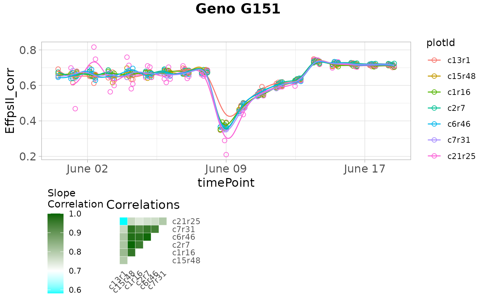
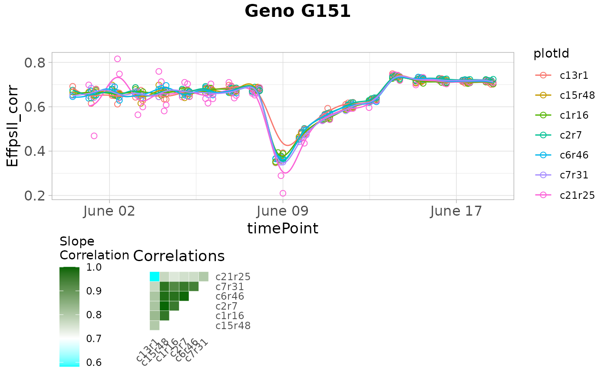

Plot the fitted spline, correlation matrix and PCA biplot for each of the genotypes. Outlying series of observations are shown as filled dots in the fitted spline plot, other observations are shown as open dots.
Arguments
- x
An object of class
serieOut.- ...
Ignored.
- reason
A character vector indicating which types of outliers should be plotted.
- genotypes
A character vector indicating which genotypes should be plotted. If
NULLall genotypes are plotted.- geno.decomp
A character vector indicating which levels of
geno.decompshould be plotted. IfNULLall levels are plotted. Ignored ifgeno.decompwas not used when fitting models.Should the timeNumber be used instead of the timePoint in the labels on the x-axis?
If
useTimeNumber = TRUE, a character vector indicating the column containing the numerical time to use.- title
A character string used as title for the plot. If
NULLa default title is added to the plot depending onplotType.- output
Should the plot be output to the current device? If
FALSEonly a (list of) ggplot object(s) is invisibly returned. Ignored ifoutFileis specified.
See also
Other functions for detecting outliers for series of observations:
detectSerieOut(),
removeSerieOut()
Examples
# \donttest{
## The data from the Phenovator platform have been corrected for spatial
## trends and outliers for single observations have been removed.
## Fit P-splines on a subset of genotypes
subGenoVator <- c("G160", "G151")
fit.spline <- fitSpline(inDat = spatCorrectedVator,
trait = "EffpsII_corr",
genotypes = subGenoVator,
knots = 50)
## Extract the data.frames with predicted values and P-Spline coefficients.
predDat <- fit.spline$predDat
coefDat <- fit.spline$coefDat
## The coefficients are then used to tag suspect time courses.
outVator <- detectSerieOut(corrDat = spatCorrectedVator,
predDat = predDat,
coefDat = coefDat,
trait = "EffpsII_corr",
genotypes = subGenoVator,
thrCor = 0.9,
thrPca = 30,
thrSlope = 0.7)
## The `outVator` can be visualized for selected genotypes.
plot(outVator, genotypes = "G151")
 ## Only visualize outliers tagged because of low correlation
## between slopes of the regression.
plot(outVator, genotypes = "G151", reason = "slope")

# }
## Only visualize outliers tagged because of low correlation
## between slopes of the regression.
plot(outVator, genotypes = "G151", reason = "slope")

# }